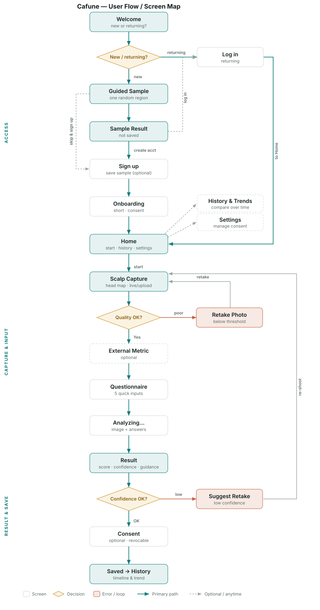
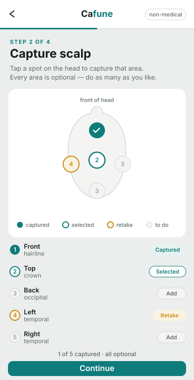
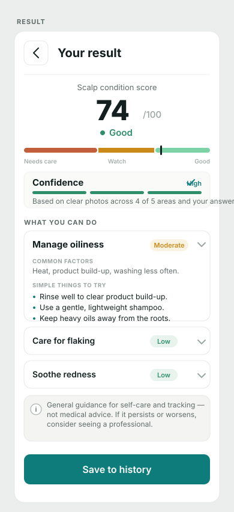
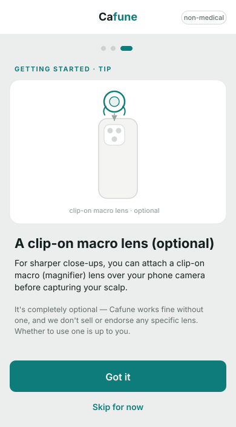

Overview
Scalp condition is hard to judge on your own — it's out of sight, and "is this worse than last month?" is almost impossible to answer from memory. Cafune turns that into something measurable: a guided capture of up to five scalp regions, a five-item questionnaire, and a 0–100 score reported with a grade, a confidence level, and how much of the head was actually covered. Each check is saved so the next one has something to compare against.
I led the design and branding track. W Labs delivered the product for the client with a PM coordinating and a separate developer on implementation, while I owned the design system, the screen flows, a mid-project results redesign, and the v2 rebuild that followed the client's review — working across the spec and QA documentation rather than handing off flat files.
Credible, not clinical
The hardest constraint wasn't visual — it was linguistic. Cafune measures, but it must never diagnose, and that line had to hold in every string on every screen. The product carries an explicit banned vocabulary: no diagnose, no disease, no treatment, no clinical, no named conditions. Even the questionnaire copy deliberately avoids words a user would expect, like “dandruff” or “hair loss”.
So results are written as trends and “areas to watch” rather than verdicts, uncertainty is shown instead of hidden, and status is never carried by colour alone — every state pairs colour with an icon and a label. The semantic palette was tuned the same way: the “needs care” state is a muted terracotta, chosen specifically so it would not read as an alarming medical red.
The flow
The end-to-end journey, mapped before any screen was designed. Two quality gates do most of the work: a per-region capture check (brightness, focus, steadiness, distance — with no override), and a confidence check on the result. Each has its own recovery loop rather than a dead end.

End-to-end user flow · capture → questionnaire → analysis → result → history
Concept explorations
Before the system was locked, each hard interaction was drawn on its own — the multi-region head map, what a result should say when it isn't confident, and how to offer an optional clip-on macro lens without ever making it feel required.



Process
Milestones are anchored to the project's Jira (epic MVP-203) and the #project-cafune Slack channel — from the first design-system ticket, through a rename, to the rebuild that followed client review.
Design system & screen flows
Kicked off under the working name Kapune. From PRD v1.2 I built the design system and mapped the screen flows — the foundation every later screen was drawn against.
Kapune → Cafune
The product was renamed mid-flight. Display names moved first; folder paths, domains and repositories were deliberately left alone so the rename couldn't break the build mid-sprint.
Consent, privacy & edge states
Consent handling split two ways — consented records to the server, non-consented kept on-device and revocable — alongside an edge-state pass covering permission denial, rejected uploads, and going offline mid-flow.
Client review — “too dark”
Two pieces of feedback reframed the product: the questionnaire was hard to find, and the interface read as too dark. Both were symptoms of the same thing — a self-care tool that felt like diagnostic equipment.
v2 — light theme, reordered flow
A full light-theme rebuild in ten days: the questionnaire moved ahead of the photo request, and the accent shifted from the original clinical teal to a warmer burnt orange. Shipped as a working prototype and a build.
Typography & design QA
A final type pass mapped screen titles to Playfair Display — replacing a face whose licence couldn't be cleared for commercial use — plus design QA against the 49-case test workbook.
Before & after
The same product, either side of the client review. Beyond the theme flip, the change was in posture — less instrument, more something you'd willingly open once a month.
Key screens
The five screens the product lives or dies on — guided capture, the questionnaire, and the result in each of its states.
Capture · head map · 140:3065
Result · 140:3838
History · 140:4596
Outcome
Cafune shipped as a 37-screen system with full light-theme coverage, an EN/KO bilingual build, and a working prototype the client could hold. Of the PRD's 66 acceptance clauses, 48 were delivered outright — and the gaps were reported honestly rather than papered over, including accuracy evidence that couldn't be proven without labelled reference data.
The part I'd carry into the next project is smaller than the redesign: the client never said “make it lighter” as a style note. They said it felt wrong. Treating that as a positioning problem rather than a colour problem is what made the rebuild worth doing.